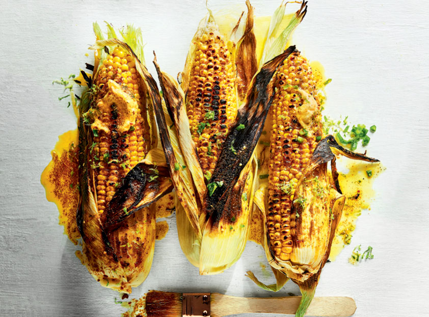

Mielies

This recipe is actually quite popular around the globe
(including South Africa) and also
a popular street food, it goes by several names;
corn on the cob, sweetcorn, or as we call it:
Mielies - another dish with a song written about it.
Ingredients:
- Mielies aka sweetcorn aka corn on the cob
Method:
- This is as simple as it gets, you roast them over the coals
turning them every now and again. The mielie should be
slightly caramelised in spots but not burnt or dried out,
it should still taste juicy.
- If you can get them with the leaves on e.g. from a farmer's
market not the shops, you can throw them over the coals
while still inside their leaves. They will steam themselves
that way.
- You ca serve this as is with just some salt & pepper, or
melted butter, chermoula sauce, jalapeno's, smoked paprika,
you can enjoy them in any way your heart desires.
Try some other recipes